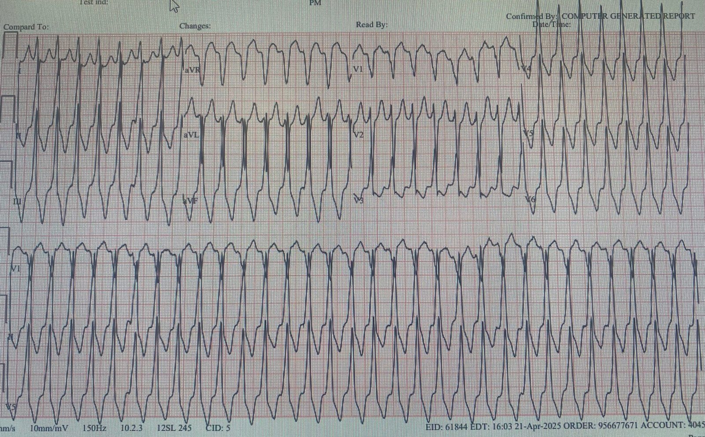
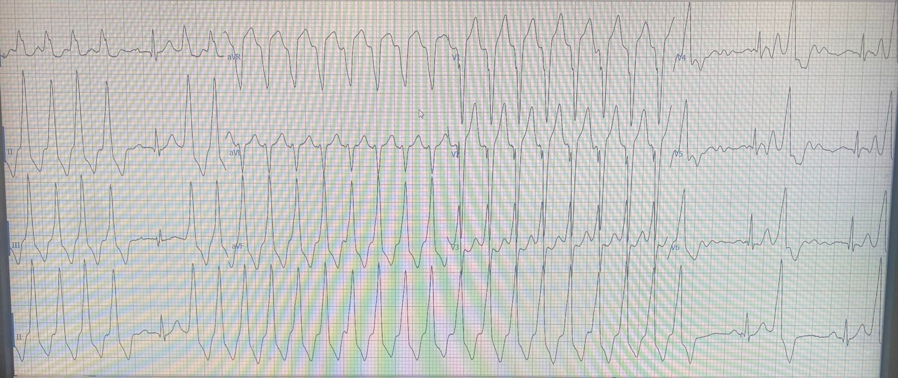
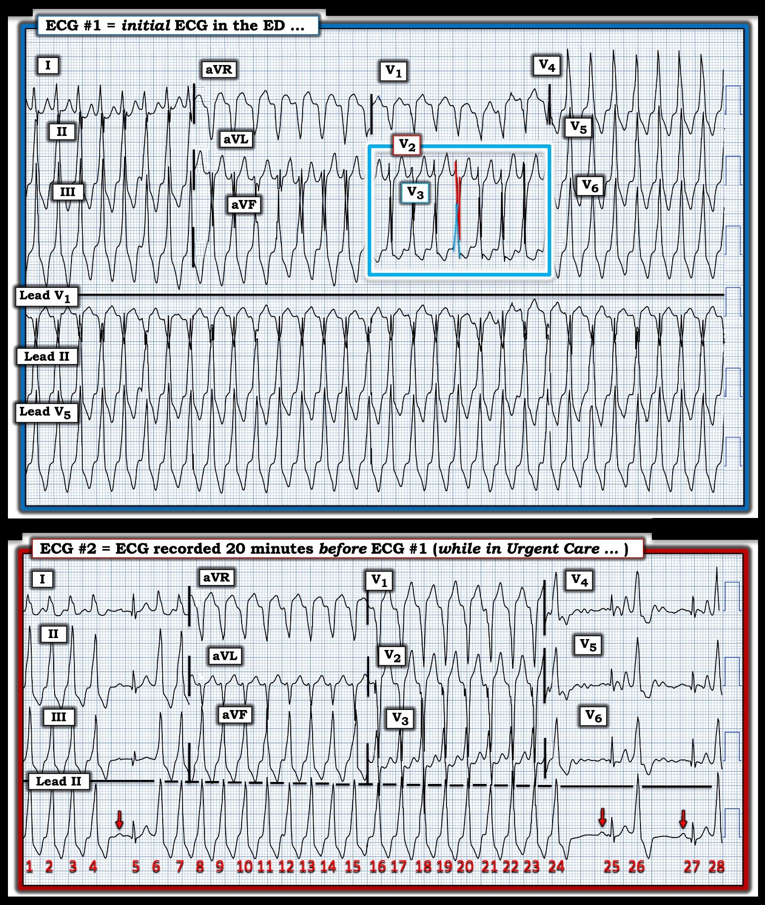
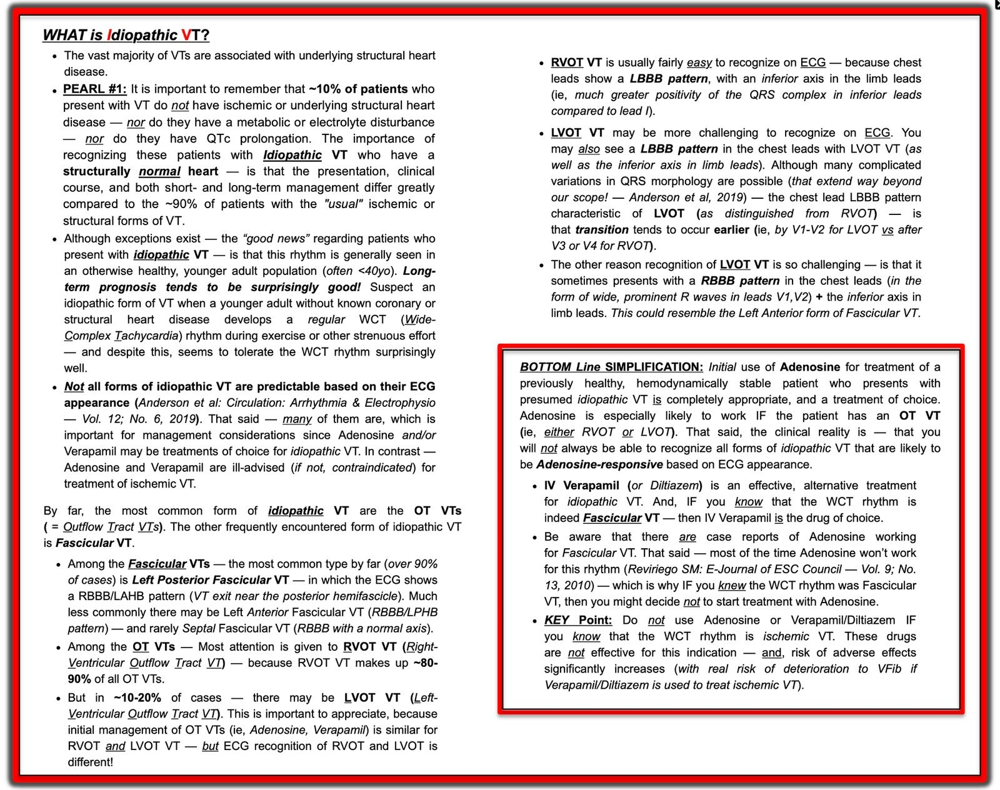

05/07/2025 — Nhịp nhanh QRS rộng, từng lúc
Bản dịch tiếng Việt của bài "Wide Complex Tachycardia, intermittent" – Dr. Smith’s ECG Blog. Giữ nguyên toàn bộ 4 hình ảnh của bản gốc.
Ca này do một cựu bác sĩ nội trú, John Dunbar, gửi đến:
“Tôi gặp ca này hôm trước. Bệnh nhân nam, khoảng 60 tuổi, không có tiền sử bệnh lý nhưng vốn không đi khám bác sĩ. Ông có một “sự kiện căng thẳng” 6 giờ trước khi đến viện và cảm thấy “khác lạ”. Ông đến cơ sở khám cấp cứu ban đầu (urgent care), tại đó được ghi một điện tâm đồ, rồi được chuyển đến chúng tôi vì điện tâm đồ bất thường. Không có điện tâm đồ nào trước đó ngoài bản ghi ở cơ sở urgent care. Ông kể thỉnh thoảng có những cơn hồi hộp đánh trống ngực ngắn, chủ yếu khi gắng sức nặng, nhưng rất hiếm và đã nhiều năm nay không bị.”
Đây là điện tâm đồ tại khoa cấp cứu (ED):


Đây là điện tâm đồ được ghi trước đó 20 phút tại cơ sở urgent care:


Trước hết là một lời bình, sau đó là câu trả lời của tôi ở bên dưới:
Tôi nhận thấy độc giả của blog này thích đọc các bài về rối loạn nhịp nhanh hơn là các bài về OMI.
Vì sao vậy?
Theo tôi, rối loạn nhịp nhanh tương đối dễ vì 2 lý do:
1) khi có rối loạn nhịp nhanh, bạn biết mình đang có vấn đề (nhịp nhanh) và 2) bạn có thể nhờ các bác sĩ tim mạch, những người giỏi xử lý loại vấn đề này.
Nhưng khi bạn có một bệnh nhân khó chịu ở ngực, khó thở, đau hàm, đau thượng vị, v.v.:
1) rất hiếm khi nguyên nhân là OMI (khoảng 2-5%, một nửa trong số đó là STEMI rõ ràng). Vì vậy bạn không biết mình đang có vấn đề lớn TRỪ KHI bạn nhận ra được OMI kín đáo trên điện tâm đồ. Và 2) các bác sĩ tim mạch không giỏi nhận ra OMI kín đáo, nên bạn không thể trông cậy vào sự trợ giúp.
Và khi tôi đăng những điện tâm đồ rối loạn nhịp nhanh này, người xem nhìn thấy chúng là lập tức thấy có vấn đề và muốn biết đáp án. Nhưng khi tôi đăng một điện tâm đồ OMI kín đáo, người xem thường không thấy gì (giống như nhiều bác sĩ tim mạch) và vì thế mất hứng thú.
Điều trớ trêu là chính những điện tâm đồ OMI kín đáo đó lại là những điện tâm đồ quan trọng nhất để học hỏi!
Câu trả lời của tôi:
“Trước hết, tôi sẽ siêu âm tim xem phân suất tống máu có tốt hay không. Tôi cũng sẽ xem hồ sơ bệnh án xem bệnh nhân có bệnh thất trái mạn tính nào không, đặc biệt là bệnh tim thiếu máu cục bộ, hoặc bất kỳ loại bệnh cơ tim nào. Nếu có, thì nhiều khả năng đây là VT thông thường, loại đáp ứng với procainamide. Nếu ngoài ra bệnh nhân khỏe mạnh, và đặc biệt nếu còn trẻ, thì tôi nghĩ tới những thứ như VT đường ra thất phải. Ông ấy khoảng 60 tuổi, nên không còn trẻ!”
“Dùng điện luôn là cách an toàn nhất để chuyển nhịp các rối loạn nhịp nhanh, nhưng nó sẽ không ngăn được tái phát, nên không có chỉ định ở đây (xem bên dưới).”
Tuy vậy, hãy nhớ rằng adenosine an toàn với mọi loại VT.
Tôi nói tiếp: “Điện tâm đồ có hình dạng điển hình của VT đường ra thất phải (RVOT). [RVOT là một trong các “nhịp nhanh thất vô căn.” Không chắc chắn đây là RVOT vì QRS hơi rộng hơn tôi dự đoán, nhưng RVOT đáp ứng tốt với adenosine và adenosine an toàn với mọi loại VT, nên trong trường hợp này tôi sẽ bắt đầu bằng adenosine. Nếu không hiệu quả, bước tiếp theo của tôi sẽ là procainamide. Nghiên cứu procamio cho thấy procainamide vừa hiệu quả hơn vừa an toàn hơn amiodarone đối với VT đơn dạng thông thường. Thuốc chẹn beta hẳn sẽ có tác dụng với RVOT, nhưng nếu đây là VT đơn dạng điển hình (không phải RVOT) do bệnh cơ tim hoặc sẹo với chức năng thất trái kém, thì BB có thể làm khởi phát sốc tim.
Vì vậy tôi chỉ dùng thuốc chẹn beta nếu chức năng thất trái rất tốt.”
Hình dạng RVOT (Ken sẽ đi sâu hơn ở bên dưới): xung động xuất phát từ đường ra thất phải (đúng như tên gọi!). Nói cách khác, nó xuất phát từ phía trên bên phải. Do đó, xung động sẽ đi về phía thành dưới và từ phải sang trái. Vì thế, nó sẽ có trục hướng xuống dưới và cả hình dạng blốc nhánh trái.
RVOT, nếu liên tục, thường đáp ứng với adenosine.
Tôi nói tiếp: “Vấn đề với adenosine hay dùng điện trong ca này là VT này rõ ràng xảy ra từng lúc (intermittent). Hãy xem điện tâm đồ ở cơ sở urgent care: có những thời điểm VT kết thúc và có ít nhất 1 nhát xoang. Vậy đây là VT tái diễn.”
Vì vậy, tôi trả lời: “Từ điện tâm đồ này có thể biết rằng dùng điện sẽ không hiệu quả, cũng như adenosine sẽ không hiệu quả. Đó là vì cả hai biện pháp đều có thời gian tác dụng rất ngắn, nên VT có thể chuyển nhịp được, nhưng sẽ quay lại. Tôi biết điều đó nhờ một khoảng ngưng có một nhát xoang. VT đã kết thúc trong một giây, nhưng rồi lại tái diễn. Điều này cho bạn biết chắc chắn sẽ cần một thuốc chống loạn nhịp.”
Cuối cùng, sau khi trao đổi với bác sĩ tim mạch, chúng tôi cho 2.5 metoprolol, thuốc có tác dụng, rồi thêm 10 nữa thì chuyển bệnh nhân về nhịp xoang bình thường (NSR).
Chẩn đoán cuối cùng là RVOT
Thuốc chẹn beta là điều trị được lựa chọn cho RVOT.
Đây là thêm các ca RVOT: RVOT (nhịp nhanh thất đường ra thất phải)
Đây là một bản tóm tắt rất hay về RVOT của StanfordHealthCare.
Một VT vô căn nổi tiếng khác là “VT phân nhánh sau (Posterior Fascicular VT)“, có hình dạng RBBB và LAFB (vì nó xuất phát từ phân nhánh sau) và đáp ứng với verapamil. Đây là một ca khác về VT phân nhánh sau vô căn.
Đây là một bản tóm tắt hay về các nhịp nhanh thất vô căn dành cho bác sĩ cấp cứu
= = =
======================================
BÌNH LUẬN CỦA TÔI, bởi KEN GRAUER, MD (5/7/2025):
Một trong những vấn đề thách thức nhất mà người làm cấp cứu phải đối mặt là đánh giá WCT đều (nhịp nhanh QRS rộng). Đó chính là thách thức đặt ra cho Dr. Smith — khi ông được nhờ đánh giá điện tâm đồ hôm nay — mà chỉ được biết bệnh nhân là nam giới khoảng 60 tuổi, có tiền sử hồi hộp đánh trống ngực từng lúc theo thời gian, chủ yếu khởi phát khi gắng sức.
Để cho rõ, trong Hình 1 — tôi đã trình bày lại điện tâm đồ ban đầu của bệnh nhân được ghi khi đến ED ( = điện tâm đồ #1) — cũng như điện tâm đồ của bệnh nhân được ghi ~20 phút trước điện tâm đồ #1, khi ông được khám tại Trung tâm Urgent Care ( = điện tâm đồ #2).
= = =
Suy nghĩ của tôi về điện tâm đồ #1:
Điện tâm đồ trong Hình 1 là một WCT đều tần số ~180/phút, không có dấu hiệu rõ của hoạt động nhĩ. Như chúng tôi đã bàn trong nhiều bài trên Dr. Smith’s ECG Blog — chẩn đoán phân biệt chính là giữa: i) VT (nhịp nhanh thất) — với — ii) Một SVT (nhịp nhanh trên thất) kèm hoặc BBB (blốc nhánh) có sẵn từ trước hoặc dẫn truyền lệch hướng liên quan tần số.
- Chúng tôi đã nhiều lần ôn lại cách đánh giá các nhịp WCT đều trên điện tâm đồ (Xem Bình luận của tôi ở cuối trang trong bài ngày 6 tháng Ba năm 2025, cùng nhiều bài khác).
- Trước hết, giả định bệnh nhân hôm nay ổn định huyết động (như chúng ta có thể cho là vậy — vì ông được chuyển từ Trung tâm Urgent Care đến ED) — thì “tin tốt” là theo định nghĩa, ta có ít nhất một chút thời gian để cân nhắc điện tâm đồ ban đầu của bệnh nhân (tức là, Bất kể nhịp gì — sốc điện chuyển nhịp ngay lập tức sẽ được chỉ định nếu bệnh nhân không ổn định với một WCT đều).
- Tôi ưu tiên bắt đầu bằng “thống kê” ở người lớn ổn định đến khám với một WCT đều. Với tuổi của bệnh nhân này (khoảng 60) — xác suất thống kê để một nhịp WCT đều không có sóng P hóa ra là VT là ít nhất 80% (và gần 90% nếu bệnh nhân có bệnh tim nền — ngay cả trước khi bạn bắt đầu phân tích điện tâm đồ).
- Như Dr. Smith đã nêu — điện tâm đồ #1 trong ca hôm nay biểu hiện hình dạng QRS gợi ý OT VT (VT đường ra) — vì: i) Có trục mặt phẳng trán hướng xuống dưới (tức là, chuyển đạo aVF dương ưu thế — so với chuyển đạo I gần như đẳng điện); và, ii) Hình dạng QRS ở các chuyển đạo trước tim giống dẫn truyền kiểu LBBB (tức là, QRS âm hoàn toàn ở chuyển đạo V1 — và QRS dương hoàn toàn ở chuyển đạo V6).
- Lý do điện tâm đồ #1 gần như chắc chắn là VT (chứ không phải dẫn truyền kiểu LBBB ở bệnh nhân SVT) — là vì không giống dẫn truyền kiểu LBBB, trong đó QRS vẫn âm ưu thế ở hầu hết các chuyển đạo trước tim cho tới V5 hoặc V6 — vùng chuyển tiếp ở điện tâm đồ #1 xảy ra trong hình chữ nhật MÀU XANH ( = giữa chuyển đạo V2 và V3), quá sớm để phù hợp với dẫn truyền trên thất. Do đó — nhịp ở điện tâm đồ #1 gần như chắc chắn là VT.
= = =
VT vô căn:
Như chúng tôi đã định kỳ ôn lại — VT vô căn là một thể đặc biệt của nhịp nhanh thất, trong đó bệnh nhân không có bệnh tim cấu trúc nền (Xem Bình luận của tôi — ở cuối trang trong bài ngày 14 tháng Hai năm 2022).
- Tùy theo quần thể được khảo sát — một trong các thể VT vô căn chiếm ~10% tổng số VT gặp trong thực hành. Như tôi tóm tắt bên dưới trong Hình 2 — ý nghĩa lâm sàng của việc phân biệt các thể VT vô căn với các thể VT do thiếu máu cục bộ và do bệnh cấu trúc phổ biến hơn nhiều — là việc đánh giá và điều trị rất khác nhau, nhìn chung các VT vô căn có kết cục dài hạn và đáp ứng điều trị tốt hơn nhiều.
= = =
Hình 1: Tôi đã trình bày lại 2 điện tâm đồ trong ca hôm nay. (Để nhìn rõ hơn — tôi đã số hóa các điện tâm đồ gốc bằng PMcardio).


= = =
Còn điện tâm đồ #2 thì sao?
Như Dr. Smith đã nêu — điện tâm đồ #2 (được ghi ~20 phút trước điện tâm đồ #1 — khi bệnh nhân ở Trung tâm Urgent Care) — mang lại cho chúng ta nhiều nhận định quan trọng!
- Các loạt VT bị ngắt quãng bởi vài nhát dẫn truyền từ xoang (nhát #5, 25 và 27). Hình dạng QRS hẹp hơn nhiều và rất khác biệt của các nhát dẫn truyền từ xoang + các khoảng ngưng sau ngoại tâm thu sau nhát #4, 24 và 26 — cùng với khoảng ghép hằng định của các nhát rộng xác nhận rằng nhịp WCT đều ở điện tâm đồ #1 đúng là VT.
- Bản chất từng lúc của WCT này ở điện tâm đồ #2 đã thuyết phục Dr. Smith về sự cần thiết phải điều trị bằng thuốc chống loạn nhịp — vì tác dụng của Adenosine hết đi trong vài giây.
- Adenosine không hiệu quả với đại đa số các nhịp VT, vốn có nguyên nhân thiếu máu cục bộ hoặc bệnh cấu trúc. Ngược lại (như Dr. Smith đã nêu) — các VT vô căn (đặc biệt là các OT VT) thường đáp ứng với adenosine! Vì vậy — sau khi xem điện tâm đồ #1, thử Adenosine tại ED là hợp lý, vì thuốc thường có hiệu quả với các OT VT. Tuy nhiên, một khi đã có bản ghi từ cơ sở Urgent Care — việc nhận biết bản chất từng lúc của WCT ở bệnh nhân này gợi ý mạnh rằng một thuốc tác dụng kéo dài hơn (như Metoprolol tĩnh mạch đã được dùng) là lựa chọn điều trị tốt hơn nhiều.
= = =
Đây là RVOT VT – hay – LVOT VT?
Như đã nhấn mạnh trong Bảng tóm tắt của tôi ở Hình 2 — cho đến nay, thể VT vô căn phổ biến nhất là các OT VT. Trong số này — RVOT VT (VT đường ra thất phải) phổ biến hơn nhiều so với LVOT (RVOT chiếm gần 90% các OT VT).
- Độ rộng QRS ở các OT VT thay đổi — thường tùy thuộc vị trí của OT VT là có nguồn gốc từ vách (thường với thời gian QRS <140 msec.) — hay từ thành tự do (điển hình với thời gian QRS ≥140 msec.) — Shimizu trong Heart Rhythm 6(10): 1507-1511, 2009.
- Trong khi RVOT VT thường không khó nhận ra trên điện tâm đồ (tức là, Các chuyển đạo trước tim cho thấy dẫn truyền kiểu LBBB với trục mặt phẳng trán hướng xuống dưới). Ngược lại — LVOT VT có biểu hiện trên điện tâm đồ đa dạng hơn. Như mô tả trong Hình 2 — tôi cho rằng điện tâm đồ hôm nay phù hợp hơn với mô tả điển hình của LVOT VT vì vùng chuyển tiếp xảy ra sớm hơn so với điển hình của RVOT VT (tức là, trong hình chữ nhật MÀU XANH ở điện tâm đồ #1).
- Dù đã nói như trên — đáp ứng lâm sàng với điều trị của RVOT VT và LVOT VT là tương tự nhau trong tình huống cấp cứu.
= = =
Hình 2: Ôn lại các đặc điểm MẤU CHỐT về VT vô căn.


= = =
= = =
= = =